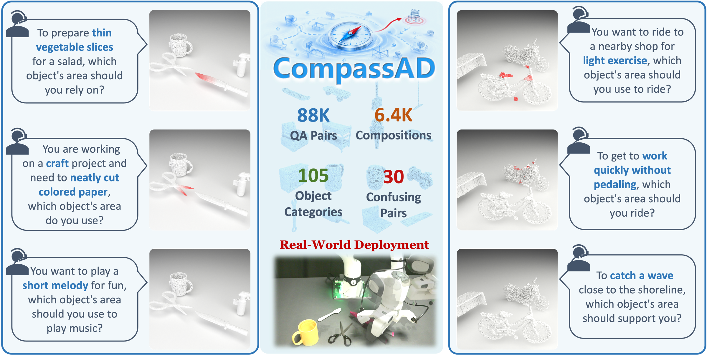
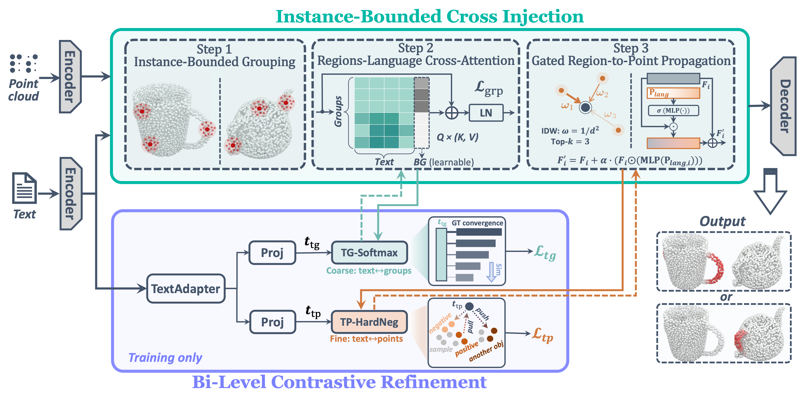
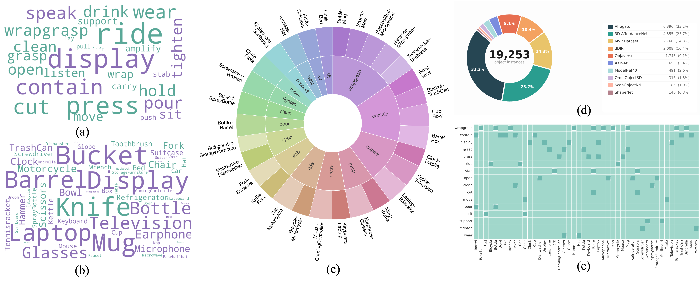
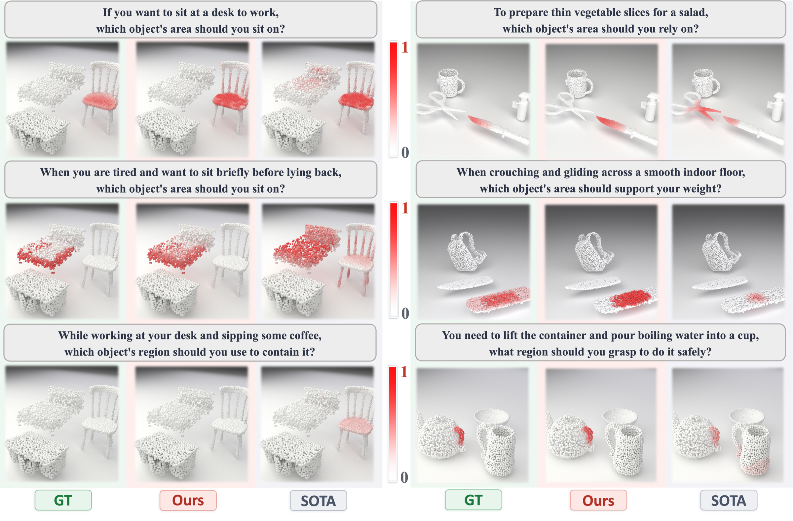
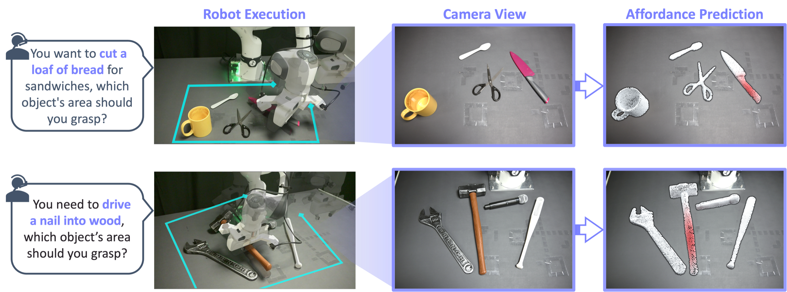

Intent-Driven 3D Affordance Grounding
in Functionally Competing Objects
Jingliang Li, Jindou Jia, Tuo An, Chuhao Zhou, Xiangyu Chen, Shilin Shan, Boyu Ma, , Gen Li†, Jianfei Yang†
MARS Lab, Nanyang Technological University, Singapore · † Corresponding Authors

"When told to cut the cake," a robot must choose the knife over nearby scissors — despite both objects affording the same cutting function.
In real-world scenes, multiple objects may share identical affordances, yet only one is appropriate under the given task context. We call such cases confusing pairs. Existing 3D affordance methods largely sidestep this challenge by evaluating isolated single objects, often with explicit category names provided in the query.
We formalize Intent-Driven Confusable Affordance Grounding, a 3D setting that requires predicting a per-point affordance mask on the correct object within a multi-object point cloud, conditioned on implicit natural-language intent. To study this problem, we construct CompassAD, the first benchmark centered on implicit intent in confusing multi-object compositions.
We further propose CompassNet, a framework with two dedicated modules. Instance-bounded Cross Injection (ICI) constrains language–geometry alignment within object boundaries to prevent cross-object semantic leakage. Bi-Level Contrastive Refinement (BCR) enforces discrimination at both geometric-group and point levels, sharpening distinctions between target and confusable surfaces. Experiments demonstrate state-of-the-art results on both seen and unseen queries, and deployment on a robotic manipulator confirms effective real-world transfer.
Kitchens, workshops, and offices present multiple objects in close proximity. A knife and scissors both afford cutting. A skateboard and surfboard both afford riding. Shared affordance renders the target ambiguous from appearance alone — correct selection must be conditioned on task intent.
Given a multi-object point cloud and a natural-language query describing an intended action, our task is to predict a per-point affordance mask on the correct object, disambiguate confusable alternatives, and abstain when no object can fulfill the intent.
Instance-Bounded Cross Injection × Bi-Level Contrastive Refinement.

Cross-modal fusion is computed independently within each instance, so text cues cannot diffuse to competing surfaces.
Radius-graph connected components assign each point an instance label; FPS selects region centers within each instance only.
Per-instance regions attend to text tokens augmented with a learnable background token — a sink for content no token can explain, enabling correct abstention.
Each point inverse-distance-pools from its kp=3 nearest enhanced regions; a multiplicative gate routes language back to points without injecting activations from scratch.
Two complementary contrastive losses sharpen object selection and point-level discrimination. Both are training-only — zero inference overhead.
Soft-label softmax ranks regions by affinity to the query; rewards regions whose points are most densely affordance-positive.
Smooth-max hard-negative mining enforces a margin between affordance points and the hardest negative on the wrong-object surface or same-object non-affordance region.
BCR backpropagates through ICI's representations during training but is dropped at inference. Zero added parameters or computation in the deployed model.
30 confusing pairs · 16 affordance types · 6,422 compositions · 87,964 intent-driven queries.

30 confusing pairs across 16 affordance types, sourced from synthetic CAD models and real-world scans. Each pair shares at least one target affordance and is functionally interchangeable.
Each composition pairs one confusing pair with up to two distractor objects (2–4 instances total). Randomized placement and permuted slots prevent positional shortcuts.
GPT-generated intent-driven queries with no object names. Includes positive, negative (for abstention), and unseen splits to evaluate language generalization.
+4.02 aIoU on Test-Seen · +3.54 aIoU on Test-Unseen vs. prior SOTA.
| Method | Venue | aIoU ↑ | AUC ↑ | SIM ↑ | MAE ↓ |
|---|---|---|---|---|---|
| Test-Seen | |||||
| 3D-SPS | CVPR 2022 | 5.23 | 64.7 | 0.158 | 0.096 |
| ReferTrans | NeurIPS 2021 | 5.81 | 66.3 | 0.171 | 0.093 |
| ReLA | CVPR 2023 | 6.47 | 68.9 | 0.193 | 0.091 |
| IAGNet | ICCV 2023 | 7.64 | 72.4 | 0.214 | 0.086 |
| GREAT | CVPR 2025 | 9.23 | 75.7 | 0.237 | 0.082 |
| PointRefer | CVPR 2024 | 10.52 | 79.3 | 0.260 | 0.079 |
| GLANCE | ICCV 2025 | 14.18 | 87.5 | 0.296 | 0.077 |
| CompassNet | Ours | 18.20 | 89.2 | 0.368 | 0.061 |
| Test-Unseen | |||||
| 3D-SPS | CVPR 2022 | 4.12 | 61.8 | 0.136 | 0.099 |
| ReferTrans | NeurIPS 2021 | 4.58 | 63.5 | 0.148 | 0.096 |
| ReLA | CVPR 2023 | 5.06 | 65.7 | 0.167 | 0.094 |
| IAGNet | ICCV 2023 | 6.07 | 68.4 | 0.186 | 0.089 |
| GREAT | CVPR 2025 | 7.31 | 72.0 | 0.209 | 0.085 |
| PointRefer | CVPR 2024 | 8.47 | 75.8 | 0.232 | 0.082 |
| GLANCE | ICCV 2025 | 11.82 | 85.2 | 0.268 | 0.075 |
| CompassNet | Ours | 15.36 | 87.4 | 0.339 | 0.059 |
All methods trained and evaluated under identical settings. Red bold = best, underline = second-best. aIoU is the primary metric.
Same composition, different intents → different activated objects and regions.

Removing ICI drops aIoU by 2.96; removing BCR drops by 1.50. Every sub-component contributes.
| Configuration | aIoU ↑ | AUC ↑ | SIM ↑ | MAE ↓ |
|---|---|---|---|---|
| CompassNet (Full) | 18.20 | 89.2 | 0.368 | 0.061 |
| Baseline (w/o ICI & BCR) | 13.80 | 87.2 | 0.290 | 0.079 |
| Ablation on ICI | ||||
| w/o ICI | 15.24 | 87.8 | 0.311 | 0.073 |
| w/o Background token | 17.58 | 88.9 | 0.360 | 0.064 |
| w/o Group relevance loss | 17.26 | 88.6 | 0.352 | 0.066 |
| w/o Gated propagation | 16.93 | 88.5 | 0.343 | 0.068 |
| Ablation on BCR | ||||
| w/o BCR | 16.70 | 88.4 | 0.353 | 0.066 |
| w/o TG-Softmax | 17.28 | 88.7 | 0.357 | 0.065 |
| w/o TP-HardNeg | 17.62 | 88.9 | 0.362 | 0.063 |

If you find CompassAD useful in your research, please consider citing.
@article{Li2026CompassAD,
title = {CompassAD: Intent-Driven 3D Affordance Grounding in Functionally Competing Objects},
author = {Li, Jingliang and Jia, Jindou and An, Tuo and Zhou, Chuhao and
Chen, Xiangyu and Shan, Shilin and Ma, Boyu and Lyu, Bofan and
Li, Gen and Yang, Jianfei},
year = {2026},
eprint = {2604.02060},
archivePrefix = {arXiv},
primaryClass = {cs.CV}
}